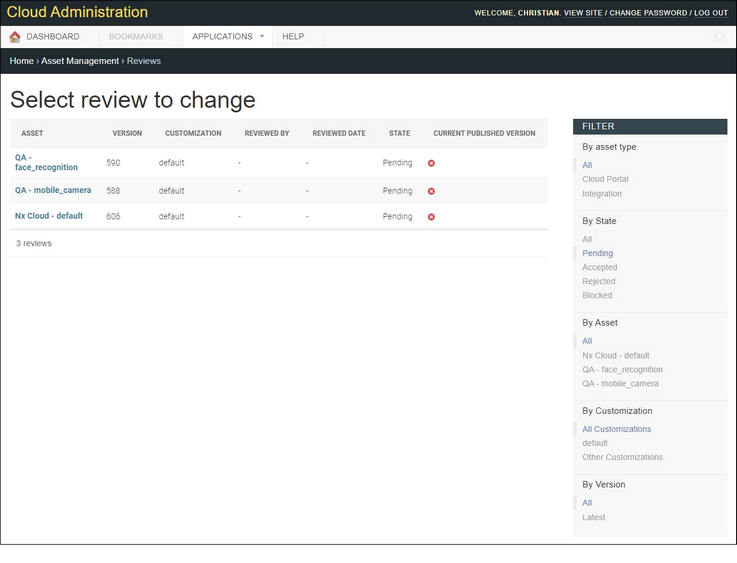
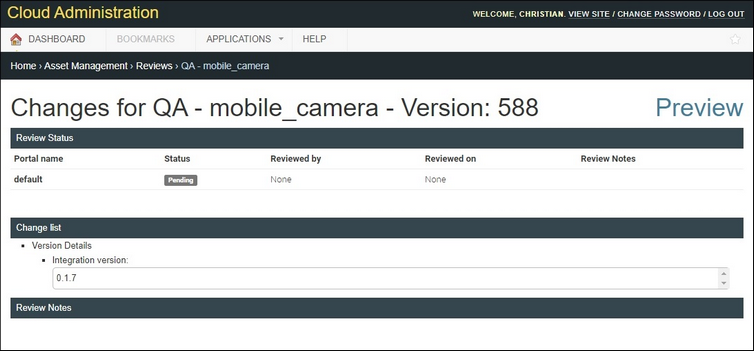
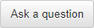

This page shows changes to an asset which is pending for review.

Version is the revision number.
•The table can be sorted by clicking on the following column headers: Version, Reviewed Date, and State.
•Revisions can be filtered by asset type or customization using the filter list to the right of the table.
Remember, all revisions since the last published version are bundled in the next revision published.
To review changes for an asset
Portal Managers can choose to accept changes, reject changes, or ask a question (this leaves a comment in the "Review Notes" section).

Click on an asset name to open the Changes page that displays recent changes for that asset. Attributes shown are:
•Portal name – name of cloud portal.
•Status – current status of the review.
•Reviewed by – the user's email address.
•Reviewed on – the date an asset was reviewed.
•Review Notes – comments about the changes made.
Reviewing Changes
– approves the suggested changes.

– allows the Portal Manager to leave a question for the user who suggested the changes.– declines the suggested changes.